Why molecules are shaped differently: electron-pair repulsion
A 93-second film that builds methane, ammonia and water from coloured spheres and bonds and asks why three molecules that all look like "a central atom with hydrogens" have three different shapes. The answer is one idea: the electron pairs around the central atom repel one another and spread out in space, and a lone pair, which has no atom on it, still takes up room. The film shows the flat drawing, lets the bonds swing out into three dimensions, orbits each molecule, and compares the three angles side by side. Built with the JS Shell.
1 The idea
Around the central atom of each molecule sit four electron pairs: some are shared with a hydrogen (a bond), and some belong to the central atom alone (a lone pair). Pairs of electrons repel one another, so the four of them settle as far apart as they can get, and in three dimensions that means pointing at the corners of a tetrahedron, with 109.5° between any two. What we see as the molecule's shape is only where the atoms are, not where the pairs are. Methane has four bonds, so all four pairs hold an atom: a tetrahedron. Ammonia has three bonds and one lone pair, so the atoms make a pyramid. Water has two bonds and two lone pairs, so the atoms make a bent line. That is the key lesson: electron-pair repulsion predicts molecular geometry.
The 3D advantage. The angles are the concept, and a flat drawing hides or distorts them. Drawn on paper, methane is a cross with 90° between the bonds; in space the same four bonds are 109.5° apart, and the hydrogens are farther from one another (3.56 against 3.08 when each bond is 2.18 long). The film makes that point by letting the bonds swing out of the flat cross, and again by looking at ammonia from straight above, where the three hydrogens look flat, and then from the side, where the pyramid shows. The shadow each molecule throws on the floor is itself a flat drawing.
The numbers the film uses are the measured ones for the three molecules, so the film also shows an ordering the model explains: the angle gets smaller as lone pairs are added.
| Molecule | Pairs | Bonds | Lone pairs | Atoms' shape | H–X–H angle | X–H bond |
|---|---|---|---|---|---|---|
| Methane, CH4 | 4 | 4 | 0 | tetrahedral | 109.5° (cos⁻¹ −⅓) | 0.109 nm |
| Ammonia, NH3 | 4 | 3 | 1 | trigonal pyramidal | 107° | 0.101 nm |
| Water, H2O | 4 | 2 | 2 | bent | 104.5° | 0.096 nm |
The units are scene units, 20 to the nanometre, so the bonds are 2.18, 2.02 and 1.92 long. Atoms are drawn at ball-and-stick size (hydrogen 0.42, carbon 0.65, nitrogen 0.62, oxygen 0.60), not at their true sizes. The plan for the clock, with the times the voice sets (the cues were timed first, and every beat sits on its cue), in seconds:
| Time | What happens |
|---|---|
| 0.8 – 10 | The question, and the three molecules built one after another: the central atom, then each bond and the hydrogen on its end |
| 10.5 – 17.6 | Methane as it is drawn on paper: the bonds swing into a flat cross, 90° apart |
| 18 – 27.3 | Every bond is a pair of electrons (a yellow glow, two dots); the pairs repel, so the bonds swing out of the plane |
| 27.8 – 34.6 | A tetrahedron: a gold cage through the four corners and a 109.5° arc, while the camera orbits |
| 35 – 46 | Ammonia: three bonding pairs, then the fourth pair, a lone pair with no atom on it, a fatter glow on top |
| 46.5 – 56.7 | The same cage; the atoms alone make a pyramid; the lone pair squeezes the bonds to 107° |
| 57.2 – 63.7 | The camera looks straight down at ammonia (three hydrogens that look flat), then comes down to the side (the pyramid) |
| 64.2 – 74.1 | Water: two bonding pairs, two lone pairs, the cage, bent, 104.5° |
| 74.6 – 83.1 | All three side by side: tetrahedral, trigonal pyramidal and bent, with 0, 1 and 2 lone pairs |
| 83.6 – 89.7 | The lesson |
| 89.7 | Cut to the end card |
2 The palette, a room and a floor
The ten materials of the film are made once, here, and every mesh that uses a colour is handed the same one: white is hydrogen and every label, charcoal is carbon (and the electrons' dots), blue is nitrogen, red is oxygen, grey is a bond, a soft translucent yellow is an electron pair, and gold draws the geometry (the tetrahedron and the angles). Seven in the palette, the room, the floor and the end card make ten. A shared material cannot fade one mesh without fading all of them, so this film reveals things by growing them from a scale of 0.001 and removes them by shrinking. One key light up and in front makes every molecule throw a shadow on the floor.
// The palette: every material of the film, made once and handed to every mesh that uses it (ten in all, with the room, the floor and the end card).
// Atoms follow the usual colours: hydrogen white (the same white as the labels), carbon charcoal, nitrogen blue, oxygen red. Bonds are grey, electron pairs are
// a soft yellow glow, and gold draws the geometry (the tetrahedron and the angles).
const mat = (color, k = 0.4, extra = {}) => new MeshStandardMaterial({ color, emissive: color, emissiveIntensity: k, roughness: 0.45, metalness: 0.05, ...extra });
globalThis.PAL = {
carbon: mat(0x4b5368, 0.3), nitrogen: mat(0x4f7dff, 0.4), oxygen: mat(0xff4d4d, 0.4),
bond: mat(0xc4cbe0, 0.25), gold: mat(0xffb703, 0.55),
pair: new MeshStandardMaterial({ color: 0xffe066, emissive: 0xffd23f, emissiveIntensity: 0.35, roughness: 0.4, metalness: 0, transparent: true, opacity: 0.42, depthWrite: false }),
white: mat(0xffffff, 0.45) // hydrogen, and every label
};
// a room around the scene and a floor under it, for the shadows to land on
const room = new Mesh(new BoxGeometry(100, 40, 70), new MeshStandardMaterial({ color: 0x2b3680, roughness: 0.95, metalness: 0, side: THREE.BackSide }));
room.name = 'Room';
room.position.set(0, 12, 0);
room.receiveShadow = true;
editor.execute(new AddObjectCommand(editor, room));
const floor = new Mesh(new PlaneGeometry(100, 70), new MeshStandardMaterial({ color: 0x232d70, roughness: 0.9, metalness: 0 }));
floor.name = 'Floor';
floor.rotation.x = -Math.PI / 2;
floor.receiveShadow = true;
editor.execute(new AddObjectCommand(editor, floor));
// one key light up and in front, so every shadow falls on the floor behind its molecule; one soft fill
const key = new PointLight(0xfff1dd, 4.5, 0, 0);
key.name = 'KeyLight';
key.position.set(4, 24, 14);
key.castShadow = true;
key.shadow.mapSize.set(2048, 2048);
key.shadow.bias = -0.0004;
key.shadow.intensity = 0.6;
key.shadow.radius = 4;
key.shadow.camera.near = 0.5;
key.shadow.camera.far = 120;
editor.execute(new AddObjectCommand(editor, key));
editor.execute(new AddObjectCommand(editor, Object.assign(new THREE.HemisphereLight(0xdde6ff, 0x6a78c8, 1.2), { name: 'FillLight' })));
Object.keys(PAL).length // 73 The three molecules
One builder makes all three, from the same few parts. Each electron pair gets a pivot, a group at the central atom turned to point where that pair points. A bonding pivot holds a bond (a cylinder from the nucleus outward), a hydrogen on its end and a pair of electrons (a glow with two dots, halfway along); a lone-pair pivot holds only a fatter glow and two dots. The directions are the geometry: methane's four bonds are at acos(−1/3) from one another; in ammonia the lone pair points straight up and the three bonds are placed so that the H–N–H angle is 107°; in water the bonds are 104.5° apart and the lone pairs 115° apart. Everything is made with make(name, geometry, material, { classes }), so each part has a name an author chose and a class from the start: ch4_nucleus, nh3_2_bond, h2o_lone1.
The gold cage joins the four pair directions with six edges (each a group at its first corner, so it grows from there), and a gold arc marks one bond angle, in the plane of the two bonds. The block also makes the flat 90° arc for the cross. The last line prints the three angles it built, which is the first check: 109.47, 107.00 and 104.50.
// The molecules. Each is a group at its own station (methane left, ammonia middle, water right), built from the same few parts:
// a nucleus; one PIVOT per electron pair, turned to point where that pair points; inside a bonding pivot, a bond, a hydrogen and a pair of electrons
// (a soft glow with two dots); inside a lone-pair pivot, a fatter glow with two dots and no atom; the gold cage that joins the four pair directions
// (a tetrahedron; each edge is a group at its first corner holding a bar, so it grows from that corner); and the gold arc that marks one bond angle.
// Everything starts collapsed (scale 0.001) and grows at its moment: a shared material cannot fade one mesh, so the film reveals by growing.
globalThis.EV = [];
globalThis.ev = (t, fn) => EV.push([t, fn, EV.length]);
globalThis.flush = () => { EV.sort((a, b) => a[0] - b[0] || a[2] - b[2]); EV.forEach(([, fn]) => fn()); return EV.length; };
globalThis.show = (sel, t, dur = 450) => ev(t, () => $S(sel).at(t).animate({ to: { scaleX: 1, scaleY: 1, scaleZ: 1 } }, dur, 'ease-out'));
globalThis.hide = (sel, t, dur = 350) => ev(t, () => $S(sel).at(t).animate({ to: { scaleX: 0.001, scaleY: 0.001, scaleZ: 0.001 } }, dur, 'ease-in'));
const M = globalThis.MOL = {
R: { H: 0.42, C: 0.65, N: 0.62, O: 0.6 }, // ball-and-stick sizes, not true atomic sizes
L: { C: 2.18, N: 2.02, O: 1.92 }, // the measured bond lengths, 0.109, 0.101 and 0.096 nm, at 20 units per nm
ANGLE: { C: 109.47, N: 107, O: 104.5 }, LONE_ANGLE_O: 115, // the measured bond angles (the tetrahedral angle is acos(-1/3))
TET: Math.acos(-1 / 3), Y: 5.2, X: { ch4: -12, nh3: 0, h2o: 12 }
};
const V = (x, y, z) => new THREE.Vector3(x, y, z), UPV = V(0, 1, 0), rad = THREE.MathUtils.degToRad, deg = THREE.MathUtils.radToDeg;
const polar = (theta, phiDeg) => { const p = rad(phiDeg); return V(Math.sin(theta) * Math.cos(p), Math.cos(theta), Math.sin(theta) * Math.sin(p)); };
M.euler = dir => { const e = new THREE.Euler().setFromQuaternion(new THREE.Quaternion().setFromUnitVectors(UPV, dir.clone().normalize()), 'XYZ'); return [e.x, e.y, e.z]; };
M.eulerDeg = dir => M.euler(dir).map(deg);
// the directions of the electron pairs: methane has four bonds; ammonia a lone pair straight up and three bonds; water two bonds and two lone pairs
const nTheta = Math.acos(-Math.sqrt((2 * Math.cos(rad(M.ANGLE.N)) + 1) / 3)); // the angle from the lone pair to each N-H bond, from the H-N-H angle
const half = rad(M.ANGLE.O / 2), lone = rad(M.LONE_ANGLE_O / 2), turn = new THREE.Matrix4().makeRotationY(rad(-45));
const DIRS = {
ch4: { bonds: [UPV.clone(), polar(M.TET, -30), polar(M.TET, 90), polar(M.TET, 210)], lone: [] },
nh3: { bonds: [polar(nTheta, -30), polar(nTheta, 90), polar(nTheta, 210)], lone: [UPV.clone()] },
h2o: { bonds: [V(Math.sin(half), -Math.cos(half), 0), V(-Math.sin(half), -Math.cos(half), 0)], lone: [V(0, Math.cos(lone), Math.sin(lone)), V(0, Math.cos(lone), -Math.sin(lone))] }
};
DIRS.h2o.bonds.forEach(d => d.applyMatrix4(turn)); DIRS.h2o.lone.forEach(d => d.applyMatrix4(turn)); // turned 45 degrees about the vertical, so from the front both the bend and the two lone pairs show
M.DIRS = DIRS;
const gAtom = { H: new SphereGeometry(M.R.H, 32, 20), C: new SphereGeometry(M.R.C, 32, 20), N: new SphereGeometry(M.R.N, 32, 20), O: new SphereGeometry(M.R.O, 32, 20) };
const gDot = new SphereGeometry(0.085, 12, 8);
const gBond = L => new CylinderGeometry(0.1, 0.1, L, 16).translate(0, L / 2, 0); // from the nucleus out to the hydrogen
const gLobeBond = L => new SphereGeometry(1, 24, 16).scale(0.36, L * 0.34, 0.36);
const gLobeLone = new SphereGeometry(1, 24, 16).scale(0.62, 0.85, 0.62);
const MAT = { C: PAL.carbon, N: PAL.nitrogen, O: PAL.oxygen };
const NAME = { ch4: 'methane', nh3: 'ammonia', h2o: 'water' };
// a pair of electrons: a glow with two dots, collapsed until its moment
function pair(name, parent, at, glow, dotX, classes) {
const g = make(name, null, null, { classes: ['pair', ...classes], parent, position: [0, at, 0], scale: 0.001 });
make(name + '_glow', glow, PAL.pair, { classes: ['pair-glow', ...classes], parent: g, shadows: false });
make(name + '_ea', gDot, PAL.carbon, { classes: ['electron'], parent: g, position: [dotX, 0, 0], shadows: false });
make(name + '_eb', gDot, PAL.carbon, { classes: ['electron'], parent: g, position: [-dotX, 0, 0], shadows: false });
return g;
}
M.build = (id, centre) => {
const L = M.L[centre], d = DIRS[id];
const mol = make(NAME[id], null, null, { classes: ['molecule', id], position: [M.X[id], M.Y, 0] });
make(id + '_nucleus', gAtom[centre], MAT[centre], { classes: ['atom', 'nucleus'], parent: mol, scale: 0.001 });
d.bonds.forEach((dir, k) => {
const n = `${id}_${k + 1}`, e = M.euler(dir);
const p = make(n + '_pivot', null, null, { classes: ['pivot', 'bonding'], parent: mol, rotation: e });
make(n + '_bond', gBond(L), PAL.bond, { classes: ['bond'], parent: p, scale: 0.001 });
make(n + '_h', gAtom.H, PAL.white, { classes: ['atom', 'hydrogen'], parent: p, position: [0, L, 0], scale: 0.001 });
pair(n + '_pair', p, L / 2, gLobeBond(L), 0.2, ['bonding-pair']);
});
d.lone.forEach((dir, k) => {
const n = `${id}_lone${k + 1}`;
const p = make(n + '_pivot', null, null, { classes: ['pivot', 'lone'], parent: mol, rotation: M.euler(dir) });
pair(n, p, 0.95, gLobeLone, 0.24, ['lone-pair']);
});
// the cage: an edge between every two of the four pair directions, each growing from its first corner
const corners = [...d.bonds, ...d.lone].map(v => v.clone().multiplyScalar(L));
for (let i = 0; i < 4; i++) for (let j = i + 1; j < 4; j++) {
const delta = corners[j].clone().sub(corners[i]), len = delta.length(), n = `${id}_edge${i + 1}${j + 1}`;
const edge = make(n, null, null, { classes: ['cage'], parent: mol, position: corners[i].toArray(), scale: 0.001 });
edge.quaternion.setFromUnitVectors(UPV, delta.normalize());
make(n + '_bar', new CylinderGeometry(0.04, 0.04, len, 8).translate(0, len / 2, 0), PAL.gold, { classes: ['cage'], parent: edge, shadows: false });
}
// the bond angle: the pair of bonds that faces the front camera most squarely
let best = null;
for (let i = 0; i < d.bonds.length; i++) for (let j = i + 1; j < d.bonds.length; j++) {
const n = d.bonds[i].clone().cross(d.bonds[j]).normalize(), face = Math.abs(n.z);
if (!best || face > best.face) best = { i, j, face };
}
const a = d.bonds[best.i], b = d.bonds[best.j], theta = a.angleTo(b), r = 1.2;
const arc = make(id + '_arc', new TorusGeometry(r, 0.05, 10, 48, theta), PAL.gold, { classes: ['angle'], parent: mol, scale: 0.001, shadows: false });
const nz = a.clone().cross(b).normalize(), ny = nz.clone().cross(a);
arc.quaternion.setFromRotationMatrix(new THREE.Matrix4().makeBasis(a, ny, nz));
M[id] = { group: mol, a, b, angle: deg(theta), mid: a.clone().add(b).normalize() };
return mol;
};
M.build('ch4', 'C');
M.build('nh3', 'N');
M.build('h2o', 'O');
// the flat cross that methane is drawn as on paper, and the angle marker between two of its arms
const flat = [UPV.clone(), V(1, 0, 0), V(0, -1, 0), V(-1, 0, 0)];
M.flatDeg = flat.map(M.eulerDeg); // the four arms, as the rotations the pivots turn to
M.tetraDeg = DIRS.ch4.bonds.map(M.eulerDeg);
make('ch4_flatarc', new TorusGeometry(1.2, 0.05, 10, 48, Math.PI / 2), PAL.gold, { classes: ['angle', 'flat'], parent: M.ch4.group, scale: 0.001, shadows: false });
const angles = ['ch4', 'nh3', 'h2o'].map(id => id + ' ' + M[id].angle.toFixed(2) + ' pair ' + M[id].a.toArray().map(x => x.toFixed(2)) + ' | ' + M[id].b.toArray().map(x => x.toFixed(2)));
angles.join('\n')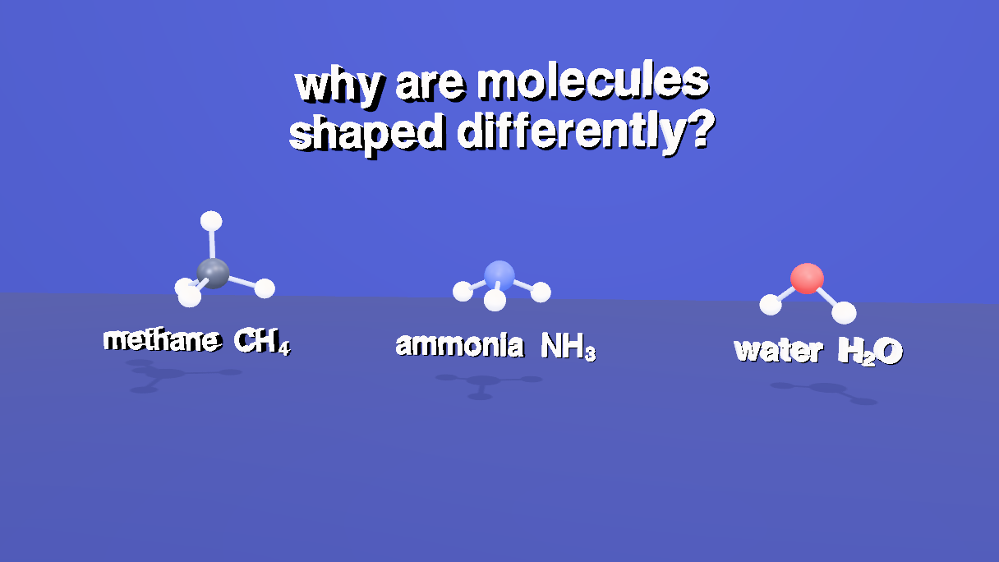
4 Seven cameras
One camera per idea: a wide one, then a close one for each molecule (field of view 28°, so the perspective is shallow and the angles read truly), one that comes down from straight above ammonia to its side, a wide one for the comparison, and the end card. The path() helper writes a move around a centre as a list of keys, each an azimuth, a radius and a height. The close cameras drift a few degrees on each molecule, so the depth shows in the parallax, and swing wider (−30° to +30°) while the tetrahedron is on screen. The block ends by putting the cuts in order.
// seven cameras, one per idea: a wide one for the three molecules, one for methane, one for ammonia, one that comes down from above ammonia to its side,
// one for water, one for the comparison, and the end card (seven shots). Each looks at its molecule from a little above, and drifts around it a few degrees,
// so the depth shows in the parallax.
function addCamera(name, fov) {
const cam = new THREE.PerspectiveCamera(fov, 16 / 9, 0.1, 400);
cam.name = name;
cam.userData.customClasses = ['camera'];
editor.execute(new AddObjectCommand(editor, cam));
return cam;
}
// a move around a centre, written as a list of keys: [time, azimuth in degrees (0 = straight in front, looking along -z), radius, height]
globalThis.path = (cam, pts, aim, center = [0, 0, 0]) => {
const keys = pts.map(([t, az, r, y]) => ({ t, pos: [center[0] + r * Math.sin(THREE.MathUtils.degToRad(az)), y, center[2] + r * Math.cos(THREE.MathUtils.degToRad(az))], lookAt: aim }));
$S('#' + cam.name).setKeys(keys, { smooth: true });
cam.position.set(...keys[0].pos); // where the camera waits before its move starts
cam.lookAt(...aim);
};
const camWide = addCamera('camWide', 40), camMethane = addCamera('camMethane', 28), camAmmonia = addCamera('camAmmonia', 28), camAbove = addCamera('camAbove', 28);
const camWater = addCamera('camWater', 28), camCompare = addCamera('camCompare', 40), end = addCamera('camCard', 50);
const Y = MOL.Y;
path(camWide, [[0.001, -6, 31, Y + 2.9], [9.9, 6, 31, Y + 2.9]], [0, Y - 0.2, 0]);
path(camMethane, [[9.9, -8, 19, Y + 2.3], [26.9, 8, 19, Y + 2.3], [30.2, -30, 19, Y + 2.3], [34.5, 30, 19, Y + 2.3]], [MOL.X.ch4, Y + 0.25, 0], [MOL.X.ch4, 0, 0]);
path(camAmmonia, [[34.5, 8, 19, Y + 2.3], [46.4, -8, 19, Y + 2.3], [56.6, 24, 19, Y + 2.3]], [MOL.X.nh3, Y + 0.25, 0], [MOL.X.nh3, 0, 0]);
// from straight above (the three hydrogens look flat) down to the side (the pyramid shows): a quarter of a circle round the nitrogen
{
const R = 19, pts = [];
for (let i = 0; i <= 8; i++) {
const t = i < 3 ? 57.15 + i * 1.5 : 60.15 + (i - 2) * 0.5; // held above for the first words, then down in the second half
const el = i < 3 ? 86 : 86 - (i - 2) / 6 * 64;
pts.push([t, 6, R * Math.cos(THREE.MathUtils.degToRad(el)), Y + R * Math.sin(THREE.MathUtils.degToRad(el))]);
}
path(camAbove, pts, [MOL.X.nh3, Y + 0.25, 0], [MOL.X.nh3, 0, 0]);
}
path(camWater, [[63.6, 30, 19, Y + 2.3], [70.0, 5, 19, Y + 2.3], [73.9, -30, 19, Y + 2.3]], [MOL.X.h2o, Y + 0.25, 0], [MOL.X.h2o, 0, 0]);
path(camCompare, [[73.9, -6, 31, Y + 2.9], [89.6, 6, 31, Y + 2.9]], [0, Y - 0.2, 0]);
end.position.set(0, 9, -17.5); // faces the end card, which hangs on the back wall
end.lookAt(0, 9, -34);
const cams = Object.fromEntries(['camWide', 'camMethane', 'camAmmonia', 'camAbove', 'camWater', 'camCompare', 'camCard'].map(n => [n, $S('#' + n).nodes[0]]));
const cuts = [[0, 'camWide'], [9.9, 'camMethane'], [34.5, 'camAmmonia'], [56.6, 'camAbove'], [63.6, 'camWater'], [73.9, 'camCompare'], [89.6, 'camCard']];
editor.scene.userData.renderShots = cuts.map(([at, name], i) => ({
id: 'shot-' + name, at, camera: cams[name].uuid, transition: i === 0 ? 'cut' : 'fade', transitionDur: 0.6
}));
editor.work.touch();
editor.scene.userData.renderShots.length // 75 The labels
Click the Text stencil (Stencils tab) once, and then paste this. Every label is a copy of that stencil, left-aligned; widths come from the font. The font has no subscript digits, so each formula is a few small labels (the letters, then a smaller, lowered digit). Labels are children of their molecule's group, so they sit in its own frame. The words are shown and cleared in step 7, and a molecule's labels are off while the camera is on another molecule, so they do not spill into the next frame.
// every label is a copy of the one Text stencil, so they share its font; they share a material per colour too, so each label cuts in (and out)
// rather than fading, because a shared material cannot fade one label without fading them all. A label's text begins at its own origin, left-aligned:
// widths come from the font (units of the font size, at scale 1), so a label is centred by subtracting half its width. The font has no subscript
// digits, so a formula is three small labels: the letters, then a smaller, lowered digit, then any letter that follows.
const tpl = $S('#Text').nodes[0];
let first = true;
globalThis.label = (name, material, cx, y, z, scale, opt = {}) => {
const m = first ? tpl : new Mesh(tpl.geometry.clone(), material);
m.name = name;
m.material = material;
m.scale.setScalar(scale);
m.position.set(cx - (opt.width || 0) * scale / 2, y, z);
m.userData.textShadow = true;
m.castShadow = false;
m.userData.customClasses = ['label', ...(opt.classes || [])];
if (opt.parent) opt.parent.add(m); else if (!first) editor.execute(new AddObjectCommand(editor, m));
first = false;
ev(0, () => $S('#' + name).at(0).change(''));
return m;
};
// show a label's text at one time and clear it at another
globalThis.say = (name, text, from, to) => {
ev(from, () => $S('#' + name).at(from).change(text));
ev(to, () => $S('#' + name).at(to).change(''));
};
// widths in the font's own units (helvetiker_bold at scale 1)
const W = { 'methane ': 6.40, CH: 2.00, 4: 0.83, 'ammonia ': 6.65, NH: 1.90, 3: 0.83, 'water ': 4.52, H: 0.95, 2: 0.83, O: 1.09 };
const SUB = 0.62; // a subscript digit is this much smaller ...
const TITLES = {
ch4: [['methane ', 0], ['CH', 0], ['4', 1]],
nh3: [['ammonia ', 0], ['NH', 0], ['3', 1]],
h2o: [['water ', 0], ['H', 0], ['2', 1], ['O', 0]]
};
// the name and formula of each molecule, on one line under it, centred
MOL.titles = {};
for (const id of Object.keys(TITLES)) {
const parts = TITLES[id], s = 0.85;
const total = parts.reduce((a, [t, sub]) => a + W[t] * (sub ? SUB : 1) * s, 0);
let x = -total / 2;
MOL.titles[id] = parts.map(([t, sub], k) => {
const name = `${id}Title${k + 1}`;
label(name, PAL.white, x, sub ? -2.9 - 0.2 * s : -2.9, 1.4, sub ? SUB * s : s, { parent: MOL[id].group });
x += W[t] * (sub ? SUB : 1) * s;
return [name, t];
});
}
globalThis.titleOn = (id, from, to) => MOL.titles[id].forEach(([name, t]) => say(name, t, from, to));
// the words of each beat, placed beside what they name (positions are in each molecule's own frame; every one is centred on the x it is given)
const G = id => MOL[id].group, mid = id => MOL[id].mid;
const at = (id, r) => [mid(id).x * r, mid(id).y * r];
// methane: the flat cross, then the tetrahedron
label('ch4Flat', PAL.white, 0, 3.05, 1.2, 0.8, { width: 8.95, parent: G('ch4') });
label('ch4Flat90', PAL.gold, 1.95, 1.7, 1.0, 0.85, { width: 2.12, parent: G('ch4') });
label('ch4Shape', PAL.white, 0, 3.1, 1.2, 0.9, { width: 7.22, parent: G('ch4') });
label('ch4Angle', PAL.gold, 3.6, 0.7, 1.0, 0.85, { width: 4.08, parent: G('ch4') });
// ammonia
label('nh3Lone', PAL.gold, 2.3, 1.8, 1.0, 0.8, { width: 5.65, parent: G('nh3') });
label('nh3Shape', PAL.white, 0, 3.1, 1.2, 0.9, { width: 11.8, parent: G('nh3') });
label('nh3Angle', PAL.gold, 3.3, -1.0, 1.0, 0.85, { width: 2.94, parent: G('nh3') });
// water
label('h2oShape', PAL.white, 0, 3.1, 1.2, 0.9, { width: 2.92, parent: G('h2o') });
label('h2oAngle', PAL.gold, 3.6, -1.4, 1.0, 0.85, { width: 4.08, parent: G('h2o') });
label('h2oLone', PAL.gold, 2.9, 1.6, 1.0, 0.8, { width: 6.42, parent: G('h2o') });
// the comparison: how many lone pairs each one has
label('cmp0', PAL.gold, 0, -4.3, 1.4, 0.8, { width: 7.63, parent: G('ch4') });
label('cmp1', PAL.gold, 0, -4.3, 1.4, 0.8, { width: 6.85, parent: G('nh3') });
label('cmp2', PAL.gold, 0, -4.3, 1.4, 0.8, { width: 7.63, parent: G('h2o') });
// the question, high over the three in the first shot; and the lesson, there again at the end
label('q1', PAL.white, 0, 12.2, 0, 1.3, { width: 12.39 });
label('q2', PAL.white, 0, 10.3, 0, 1.3, { width: 12.8 });
label('rule1', PAL.white, 0, 11.6, 0, 1.0, { width: 14.88 });
label('rule2', PAL.white, 0, 10.0, 0, 1.0, { width: 19.01 });
$S('.label').nodes.length // 286 The end card
Click the Call card stencil, then paste. It is hung on the back wall, facing the last camera.
// the end card: the Call card stencil, landscape, hung on the back wall and facing the end camera
const card = $S('#callcard').nodes[0];
card.userData.width = 3.2;
card.userData.height = 1.8;
card.geometry = new PlaneGeometry(3.2, 1.8);
$S('#callcard').moveTo(0, 9, -34).scaleTo(8);
card.rotation.set(0, 0, 0);
card.material.opacity = 0;
card.userData.customClasses = ['card'];7 The schedule
Every reveal and every move of the film, in one place, each on the words that name it. The three molecules are built first (atoms). In cue 2 the four methane pivots turn to the flat cross, with animate({ to: { rotation: [x, y, z] } }); the pose is a rotation, and the animation takes the shortest way between two rotations, so the hydrogen sweeps along an arc. In cue 3 they turn back to the tetrahedron. Everything that appears is a scale from 0.001 to 1: the pairs of electrons, the cages, the arcs. Ammonia's cage, lone pair and words step aside while the camera looks straight down, and return when it comes down to the side.
// the schedule of the film: every reveal and every move, queued with its time and written in time order at the end (flush).
// The cue starts are the narration's, measured with the voice first (see the subtitles): every beat sits on the words that name it.
const S = [0.8, 10.45, 18.05, 27.775, 35.05, 46.475, 57.15, 64.175, 74.55, 83.55, 90.15];
const nPairs = { ch4: 4, nh3: 3, h2o: 2 }, nLone = { ch4: 0, nh3: 1, h2o: 2 };
const EDGES = ['12', '13', '14', '23', '24', '34'];
// the atoms: the nucleus, then each bond and the hydrogen on the end of it
const atoms = (id, t0) => {
show(`#${id}_nucleus`, t0, 500);
for (let k = 1; k <= nPairs[id]; k++) { show(`#${id}_${k}_bond`, t0 + 0.4 + 0.3 * (k - 1), 350); show(`#${id}_${k}_h`, t0 + 0.6 + 0.3 * (k - 1), 300); }
};
const bondingPairs = (id, t0, gap) => { for (let k = 1; k <= nPairs[id]; k++) show(`#${id}_${k}_pair`, t0 + gap * (k - 1), 500); };
const lonePairs = (id, t0, gap) => { for (let k = 1; k <= nLone[id]; k++) show(`#${id}_lone${k}`, t0 + gap * (k - 1), 600); };
const cage = (id, t0, gap) => EDGES.forEach((e, n) => show(`#${id}_edge${e}`, t0 + gap * n, 400));
const uncage = (id, t) => EDGES.forEach(e => hide(`#${id}_edge${e}`, t, 300));
// turn a pivot to a pose (degrees), with a smooth start and stop
const turn = (sel, t, deg, ms) => ev(t, () => $S(sel).at(t).animate({ to: { rotation: deg } }, ms, 'ease-in-out'));
const pulse = (sel, t, base) => {
ev(t, () => $S(sel).at(t).animate({ to: { scaleX: base * 1.3, scaleY: base * 1.3, scaleZ: base * 1.3 } }, 300, 'ease-out'));
ev(t + 0.4, () => $S(sel).at(t + 0.4).animate({ to: { scaleX: base, scaleY: base, scaleZ: base } }, 300, 'ease-in-out'));
};
const END = 89.6, CMP = 74.0;
// a label shows in its own beat and again in the comparison; in between it is off, so it does not spill into the next molecule's frame
const sayWin = (name, text, wins) => wins.forEach(([a, b]) => say(name, text, a, b));
const titleWin = (id, wins) => wins.forEach(([a, b]) => titleOn(id, a, b));
// cue 1: the question, and the three molecules, built from spheres and bonds, one after another
say('q1', 'why are molecules', 0.9, 9.9); say('q2', 'shaped differently?', 0.9, 9.9);
atoms('ch4', 1.0); atoms('nh3', 3.4); atoms('h2o', 5.6);
titleWin('ch4', [[1.4, 34.4], [CMP, END]]);
titleWin('nh3', [[3.8, 9.9], [34.5, 56.5], [61.9, 63.5], [CMP, END]]);
titleWin('h2o', [[6.0, 9.9], [63.6, END]]);
// cue 2: methane as it is drawn on paper: four bonds in a cross, 90 degrees apart
for (let k = 0; k < 4; k++) turn(`#ch4_${k + 1}_pivot`, 10.9, MOL.flatDeg[k], 1100);
show('#ch4_flatarc', 12.6, 400);
say('ch4Flat', 'a flat drawing', 12.4, 23.9);
say('ch4Flat90', '90°', 12.8, 23.9);
// cue 3: every bond is a pair of electrons; they repel, and in space the bonds swing apart to the corners of a tetrahedron
bondingPairs('ch4', 18.9, 0.4);
hide('#ch4_flatarc', 23.9, 300);
for (let k = 0; k < 4; k++) turn(`#ch4_${k + 1}_pivot`, 24.0, MOL.tetraDeg[k], 1900);
// cue 4: the tetrahedron, and the angle between any two bonds
sayWin('ch4Shape', 'tetrahedral', [[28.3, 34.4], [CMP, END]]);
cage('ch4', 28.5, 0.25);
show('#ch4_arc', 31.0, 450);
sayWin('ch4Angle', '109.5°', [[31.3, 34.4], [CMP, END]]);
// cue 5: ammonia has the same four pairs, but one of them is a lone pair, with no atom on it
bondingPairs('nh3', 37.2, 0.4);
lonePairs('nh3', 42.6, 0.5);
say('nh3Lone', 'lone pair', 43.0, 49.6);
// cue 6: the cage is still a tetrahedron; the atoms alone make a pyramid; the fat lone pair squeezes the bonds to 107 degrees
cage('nh3', 47.0, 0.3);
sayWin('nh3Shape', 'trigonal pyramidal', [[50.5, 56.4], [62.2, 63.5], [CMP, END]]);
show('#nh3_arc', 53.8, 450);
sayWin('nh3Angle', '107°', [[54.1, 56.4], [62.6, 63.5], [CMP, END]]);
// cue 7: from straight above the three hydrogens look flat, so the cage, the lone pair and the words step aside; from the side the pyramid shows
uncage('nh3', 56.5); hide('#nh3_lone1', 56.5, 300); hide('#nh3_arc', 56.5, 300);
cage('nh3', 61.6, 0.12);
show('#nh3_lone1', 62.2, 500); show('#nh3_arc', 62.4, 450);
// cue 8: water has two bonds and two lone pairs: bent
bondingPairs('h2o', 64.6, 0.4);
lonePairs('h2o', 66.2, 0.4);
say('h2oLone', 'lone pairs', 66.8, 70.4);
cage('h2o', 68.0, 0.25);
say('h2oShape', 'bent', 69.0, END);
show('#h2o_arc', 71.6, 450);
say('h2oAngle', '104.5°', 71.9, END);
// cue 9: the same four pairs, three shapes; each lone pair closes the angle more
pulse('#ch4Shape', 74.7, 0.9); pulse('#nh3Shape', 76.3, 0.9); pulse('#h2oShape', 78.6, 0.9);
say('cmp0', '0 lone pairs', 80.6, END);
say('cmp1', '1 lone pair', 81.6, END);
say('cmp2', '2 lone pairs', 82.5, END);
// cue 10: the lesson
say('rule1', 'electron-pair repulsion', 84.2, END);
say('rule2', 'predicts molecular geometry', 85.9, END);
// the end card fades in as the last camera arrives
ev(89.7, () => $S('#callcard').at(89.7).fadeIn(2.0));
EV.length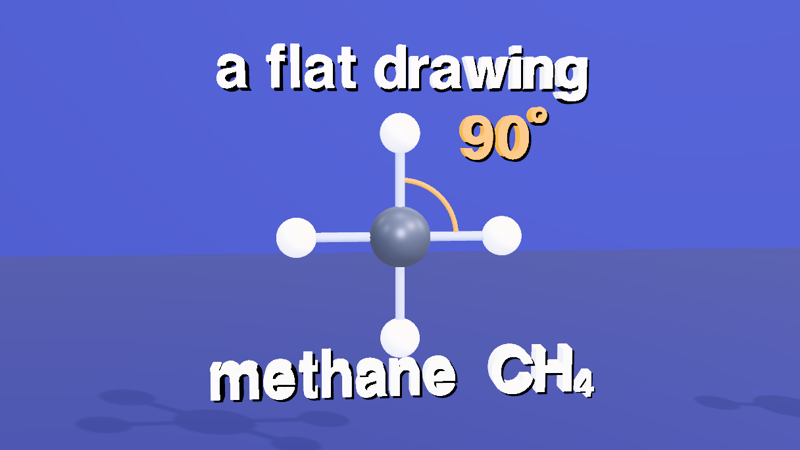
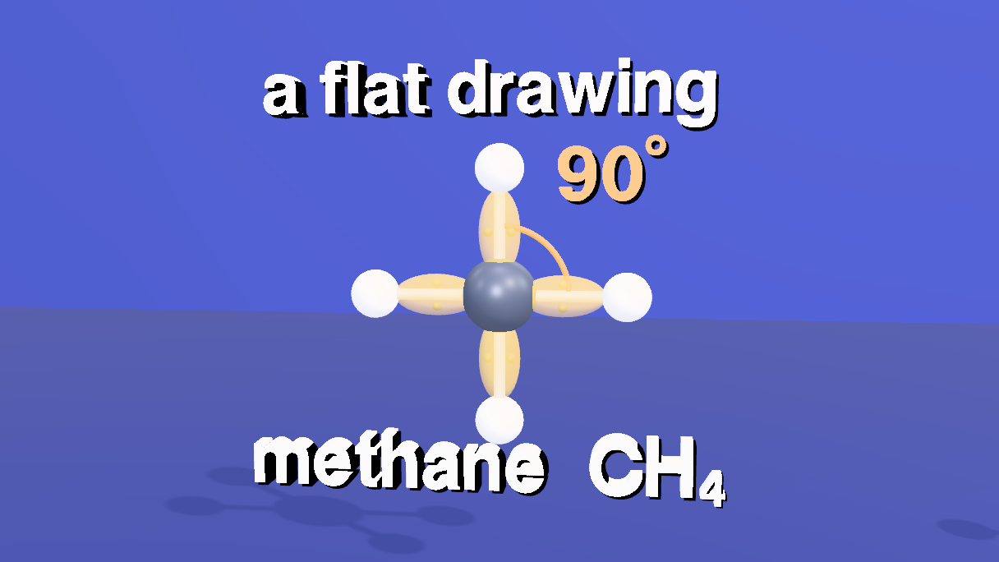
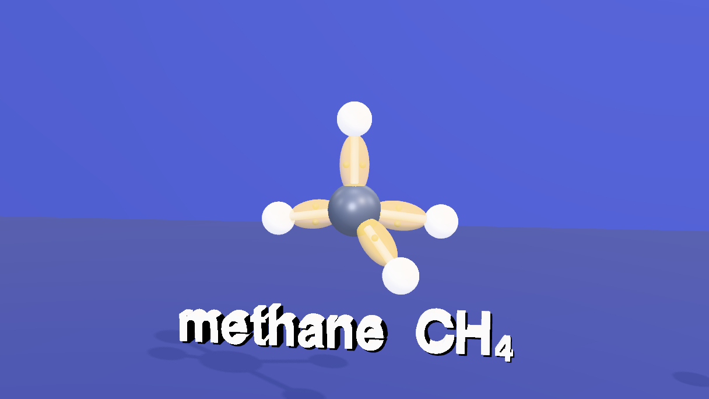
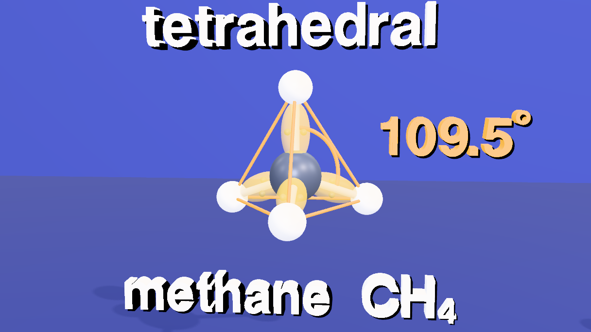
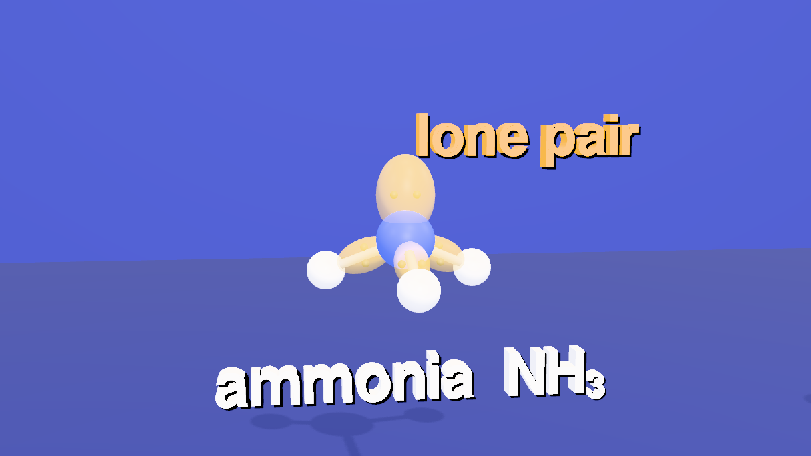
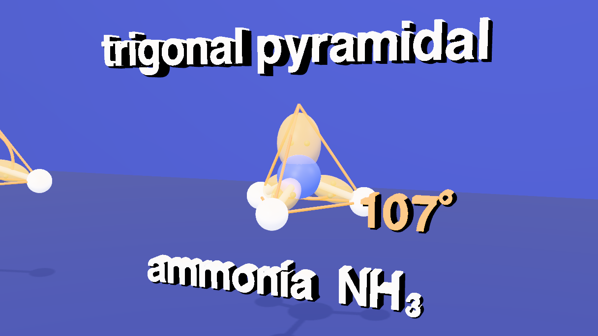
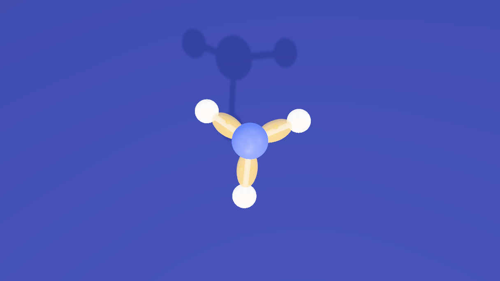
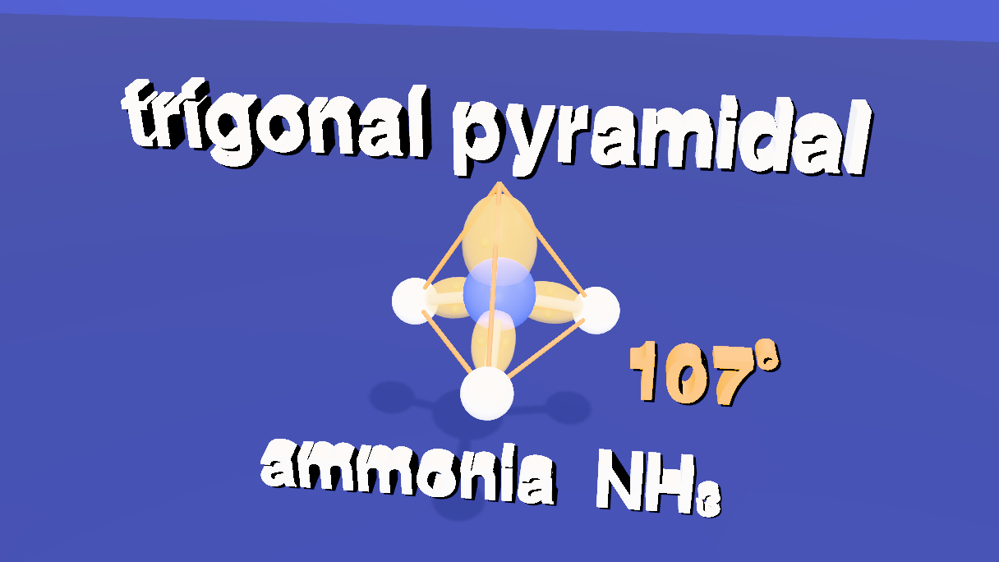
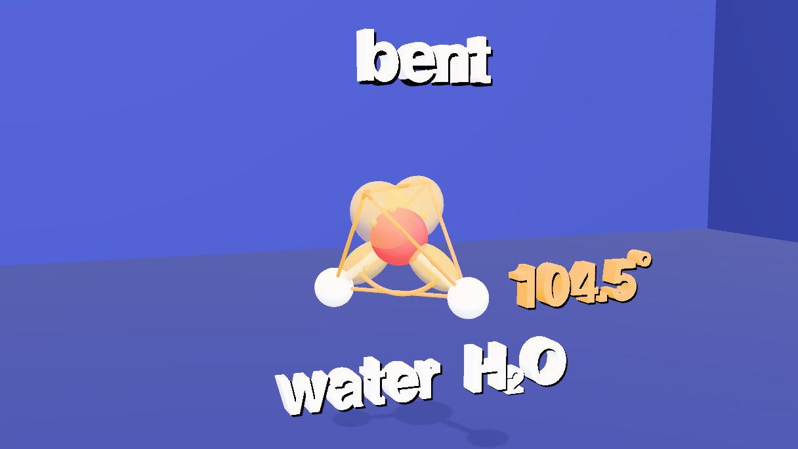
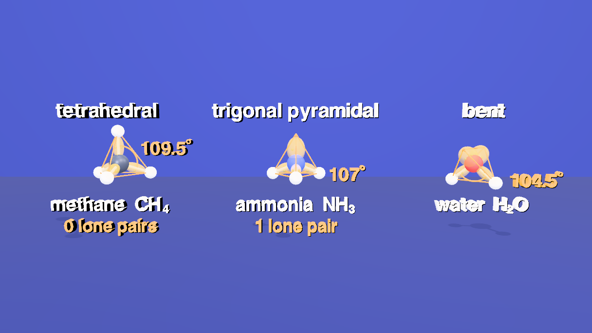
8 Subtitles
Eleven cues, kept on the scene (scene.userData.renderSubtitles) like the other shorts. The cues were run through a speech synthesizer (Kokoro, af_sarah) and each cue gets its measured length plus 0.3 seconds, with a gap before the next, so no two ever overlap. Numbers are written as they are spoken ("one hundred nine point five degrees").
// the narration as subtitle cues, kept on the scene (scene.userData.renderSubtitles); each cue starts where the voice does and ends where the voice measured
setSubtitles([
{ start: 0.8, end: 10.0, text: "Methane, ammonia and water: each is a central atom bonded to\nhydrogens, and each has a different shape. Why?" },
{ start: 10.45, end: 17.6, text: "Start with methane. A flat drawing puts its four\nbonds in a cross, ninety degrees apart." },
{ start: 18.05, end: 27.325, text: "But every bond is a pair of electrons, and\nelectron pairs repel each other. In space, the\nbonds can swing further apart." },
{ start: 27.775, end: 34.6, text: "They settle into a tetrahedron: one hundred nine point\nfive degrees between every pair of bonds." },
{ start: 35.05, end: 46.025, text: "Now ammonia. Nitrogen also has four electron\npairs, but only three are bonds. The fourth is a\nlone pair, with no atom on it." },
{ start: 46.475, end: 56.7, text: "The four pairs still form a tetrahedron, but the\natoms make a pyramid. The fatter lone pair squeezes\nthe bonds to one hundred seven degrees." },
{ start: 57.15, end: 63.725, text: "Look from above, and the pyramid looks flat.\nOnly from the side does its shape show." },
{ start: 64.175, end: 74.1, text: "Water has two bonds and two lone pairs, so its atoms\nare bent, and the two fat lone pairs squeeze the angle\nto one hundred four point five degrees." },
{ start: 74.55, end: 83.1, text: "Tetrahedral, trigonal pyramidal, bent: the\nsame four electron pairs, and each lone pair\ncloses the angle a little more." },
{ start: 83.55, end: 89.7, text: "Electron pairs repel each other, and that\nrepulsion predicts the shape of a molecule." },
{ start: 90.15, end: 92.35, text: "Made with Strata." }
]).length // 119 Write the animation
One last block of animation. Every animation queued above is written now, in time order, so no object's track is ever written out of order.
// every animation of the film is written now, in time order
flush()10 Name and class everything
The film is only addressable if every object has a name an author chose and at least one class: otherwise $S('#nh3_lone1'), $S('.lone-pair'), $S('.cage'), an AI edit or a tutorial step cannot reach it. Everything the film made was named and classed where it was made, so this last block only classes the room, the lights, the cameras and the card, from one table, and then calls requireLabels(true). That marks the scene: from now on a commit is refused while any object is unnamed, duplicated or without a class, and lint() lists what is wrong. Objects the engine makes itself (the dark shadow of each text label, whose names start with __) are exempt. With the classes in place, $S('.lone-pair') reaches every lone pair of the film (one in ammonia, two in water, with the glow and the dots inside each), and $S('.cage') every edge of every tetrahedron.
// Every part was named, and given its classes, where it was made (make(name, geometry, material, { classes })): a nucleus is 'ch4_nucleus', a bond 'nh3_2_bond',
// the glow of a lone pair 'h2o_lone1_glow'. This last block only classes what the stencils and the room made, from one table, and then calls requireLabels(true).
// Anything left without a class is listed and the block stops.
const rules = [
[/^(Room|Floor)$/, ['environment']], [/Light$/, ['light']], [/^cam/, ['camera']], [/^callcard$/, ['card']]
];
const left = [];
scene.traverse(o => {
if (o === scene || o.name.startsWith('__')) return;
const add = rules.filter(([re]) => re.test(o.name)).flatMap(([, c]) => c);
o.userData.customClasses = [...new Set([...(o.userData.customClasses || []), ...add])];
if (o.userData.customClasses.length === 0) left.push(o.name || '(unnamed)');
});
if (left.length) throw new Error(left.length + ' objects have no class: ' + left.slice(0, 12).join(', '));
requireLabels(true) // from here on a commit is refused while anything is unnamed, duplicated or classless11 The narration
The eleven subtitle cues were written to be read aloud. A voice track made from them with dub.webcli.app (every cue placed at its start time in one WAV, voice af_sarah, 92.65 s, no cue overlaps another) is committed beside the scene as audio/molecule-shapes.wav, and this one-line block tells the scene to carry it: the path is relative to the scene file's folder in the repo. When the render is published (Render tab, Publish), the track is encoded once as AAC and every video rung references it through an HLS audio group.
// The narration the published render carries: the voice track made from the subtitles (a WAV with every cue at its start time, from dub.webcli.app),
// stored in the repo beside the scene. The path is relative to the scene file's folder.
setRenderAudio('audio/molecule-shapes.wav', { language: 'en', label: 'English' })12 Render it
- Open the Render tab and its Video sub-tab. The Camera Sequence already holds the seven shots from step 4.
- Choose Render (offline), 1920 × 1080 at 60 fps, and click Render. Every frame is drawn and captured at its exact timeline time, so the result is the same on a fast or a slow machine. Tick Hard-burn to draw the subtitles into the picture, and keep Also export a matching .srt.
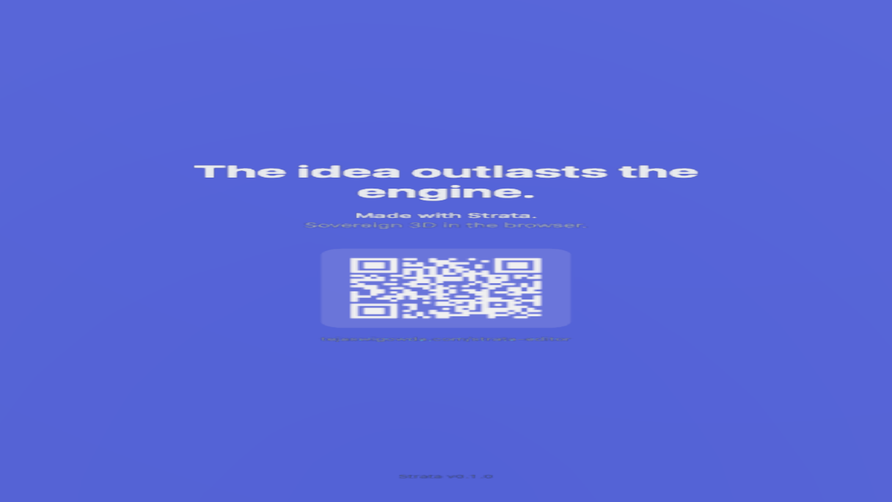
13 Open the scene file
The scene is molecule-shapes.json in tejaswigowda/test1. It is the scene file, not a still: the timeline, the camera sequence and the subtitles are saved inside it, so opening it plays the film without any script, and the blocks on this page are how it was authored. Scrub the Animations tab: at 11 s the flat cross, at 29 s the tetrahedron, at 44 s the lone pair, at 59 s ammonia from above, at 72 s water, and from 89.7 s the card fills the frame.
@e223905), which never goes stale; the link in this step reads the branch head. When the scene is republished, move the commit in the player's address.lint() reports nothing, and the scene is marked with requireLabels), 93 timeline tracks, 7 shots and 11 cues. The geometry was read back from the loaded scene by seeking to a moment and measuring the distances and angles between the atoms' world positions: at 2 s (as built) every H–C–H angle was 109.47° and every C–H 2.18, the three H–N–H angles were 107.00° with N–H 2.02, and H–O–H was 104.50° with O–H 1.92 (and 115.00° between the two lone pairs); at 12.5 s and 22 s the methane arms were a flat cross, 90° and 180°, with H–H 3.083 along each side; from 30 s on they were the tetrahedron again, H–H 3.560. The screenshots are frames of the pasted scene at 8.5, 14, 22, 25, 32.5, 44.5, 54.8, 58.6, 62.8, 72.5, 82 and 92 s, with the editor's controls hidden. Rendering to a video file (step 12) was not run for this page.requireLabels, so a commit with an unnamed, duplicated or classless object is refused; lint() in the Shell lists any.Credits and licences
People
- Tejaswi Gowda (script, scene)
Assets
None used.
Tools
- Kokoro (voice af_sarah) (Apache-2.0)
- dub.webcli.app (GPL-3.0)
- eSpeak NG (GPL-3.0) Speaks the phonemes for dub.webcli.app; invoked across an origin, not bundled with Strata (guides/HANDOFF.md).